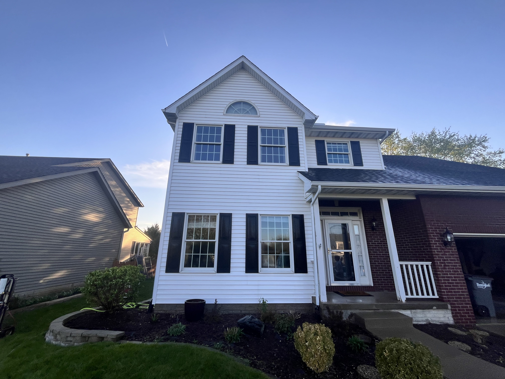
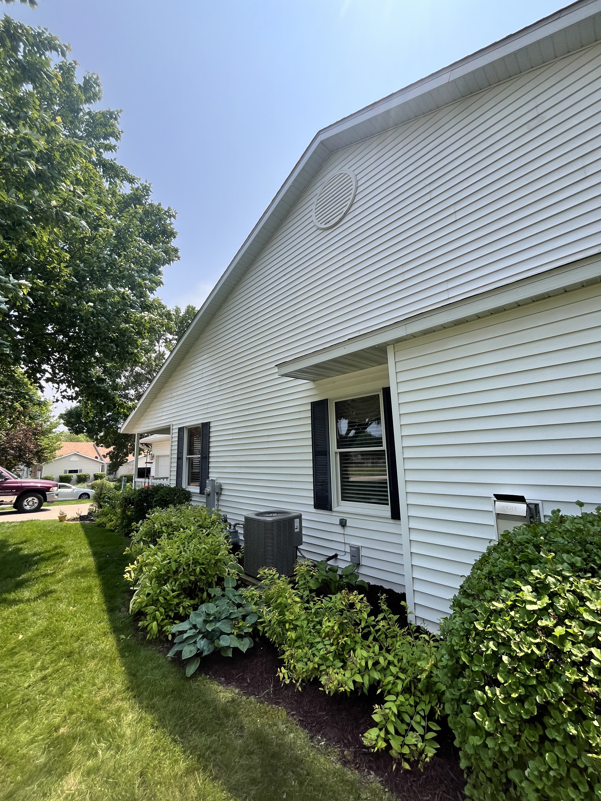
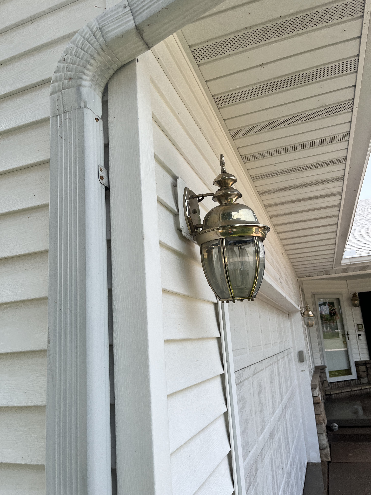

Gallery




Gentle on Surfaces. Tough on Grime.
Our siding power washing service is a safe and effective method of cleaning your home’s exterior. Unlike Traditional high-pressure washing, which can damage delicate surfaces, our approach uses a special cleaning solution combined with pressured water to clean and sanitize the siding of your home.
This method is gentle on surfaces but tough on dirt, algae, mold, and stains. The cleaning solution used in the process penetrates the surface to break down tough grime, and our expert team ensures that the job is done efficiently and thoroughly.
Our team uses professional-grade equipment and cleaning solutions to give your home a fresh, clean appearance. We make sure to follow all safety protocols and take every precaution to protect your property during the cleaning process.
Request a Quote